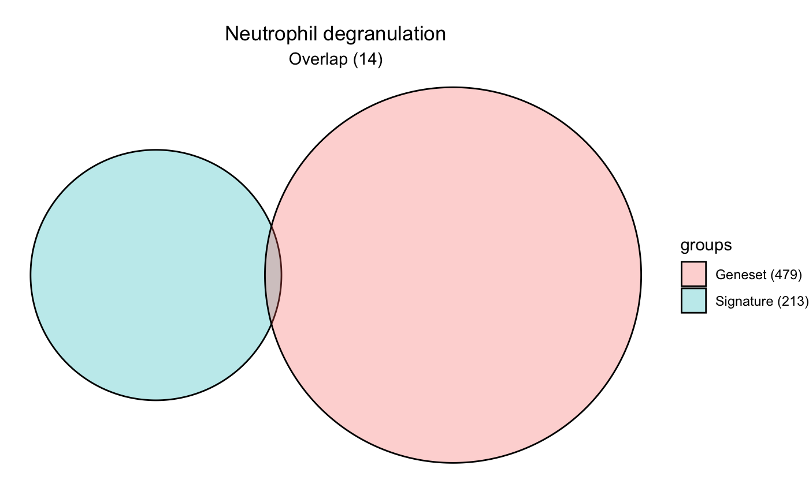
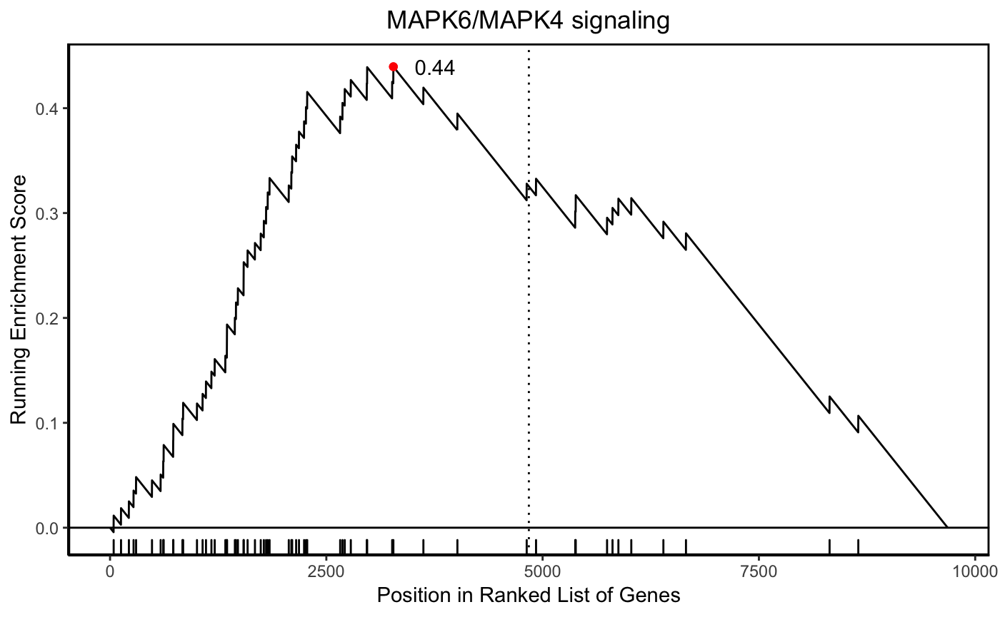

hypeR employs multiple types of enrichment analyses (e.g. hypergeometric, kstest, gsea). Depending on the type, different kinds of signatures are expected. There are three types of signatures hypeR() expects.
# Simply a character vector of symbols (hypergeometric)
signature <- c("GENE1", "GENE2", "GENE3")
# A pre-ranked character vector of symbols (kstest)
ranked.signature <- c("GENE1", "GENE2", "GENE3")
# A pre-ranked named numerical vector of symbols with ranking weights (gsea)
weighted.signature <- c("GENE1"=1.22, "GENE2"=0.94, "GENE3"=0.77)A geneset is simply a list of vectors, therefore, one can use any custom geneset in their analyses, as long as it’s appropriately defined. In our tutorials, we will use genesets from REACTOME. There is also what is called relational genesets, whereby genesets are organized into a hiearchy; we will explore these in later tutorials.
In these tutorials, we will use example data. The example data includes an expression set object as well as pre-computed results from common workflows such as diffential expression and weighted gene co-expression analyses.
Using a differential expression dataframe created with limma, we will extract a signature of upregulated genes for use with a hypergeometric test and rank genes descending by their differential expression level for use with a kstest. We’ll also import genesets from KEGG.
All workflows begin with performing hyper enrichment with hypeR(). Often we’re just interested in a single signature, as described above. In this case, hypeR() will return a hyp object. This object contains relevant information to the enrichment results and is recognized by downstream methods.
#> hyp object:
#> data: 67 x 6
#> plots: 67
#> args: signature
#> gsets
#> test
#> bg
#> pval_cutoff
#> fdr_cutoff
#> weights_pwr
#> absolute
#> do_plots
#> verbose#> label pval fdr
#> Tight junction 1.2e-11 3.7e-09
#> Salmonella infection 3.8e-09 5.8e-07
#> MAPK signaling pathway 6.6e-09 6.8e-07
#> Endocytosis 9.9e-09 7.6e-07
#> Neurotrophin signaling pathway 5.0e-08 3.1e-06
#> Ras signaling pathway 7.2e-08 3.7e-06
#> hyp object:
#> data: 6 x 6
#> plots: 6
#> args: signature
#> gsets
#> test
#> bg
#> pval_cutoff
#> fdr_cutoff
#> weights_pwr
#> absolute
#> do_plots
#> verbose#> label pval fdr
#> Tight junction 1.4e-09 4.3e-07
#> Proteasome 1.7e-05 2.6e-03
#> Viral carcinogenesis 4.1e-05 3.9e-03
#> Sphingolipid signaling pathway 5.3e-05 3.9e-03
#> Steroid biosynthesis 6.4e-05 3.9e-03
#> Longevity regulating pathway 1.0e-04 5.1e-03